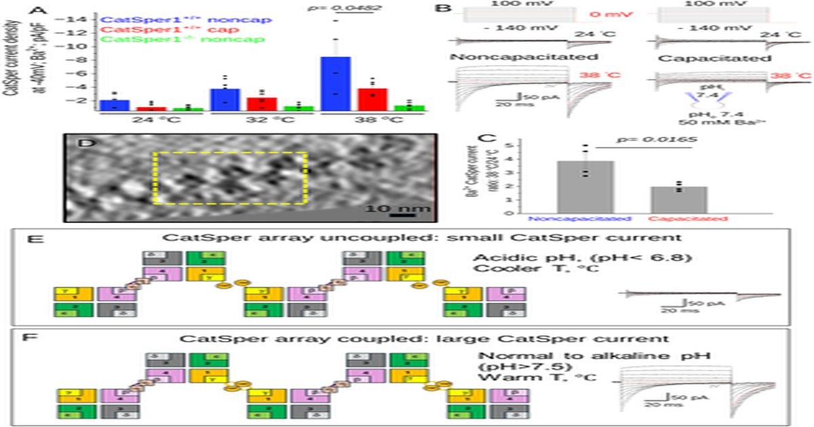

Гистидин-опосредованный супрамолекулярный механизм связывает температуру и pH активацию сперматозоидного канала CatSper
билли Чжао (Billy Zhao), Швета Бхагват (Shweta Bhagwat), Хуан Феррейра (Juan Ferreira), Кирстен М.
Рафф (Kiersten M.
Ruff), Дилип К.
Суэйн (Dilip K.
Swain), Рохит В.
Паппу (Rohit V.
Pappu), Селия М.
Санти (Celia M.
Santi), Цзяо Фу (Ziao Fu), Полина В.
Лишко (Polina V.
Lishko) Катионный канал спермы, CatSper, является специфическим для сперматозоидов кальцие CatSper активируется внутриклеточной подщелачиванием, деполяризацией мембраны и повышенной температурой, которые вместе обеспечивают максимальную генерацию тока.
Однако структурные механизмы b